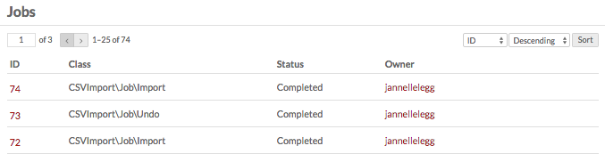
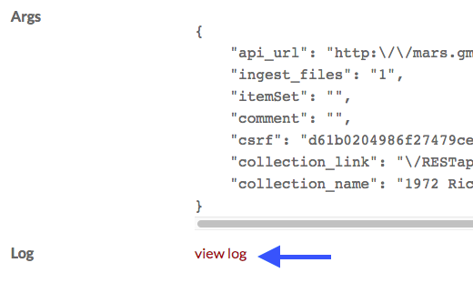

When a user starts running a process which will take some time, such as an API import, the progress of the process is displayed in the Jobs tab of the admin dashboard. The table also displays completed, stopped, and error-interrupted jobs.
The Jobs table shows a job’s ID number, class of job, Status and the Owner, or user who started the job.
You can order the rows of the table by ID, Class, Status, or Owner (descending or ascending) using the drop-down menus just above the table on the upper right.

To see the details of a job, click on its id number.
On a job’s details page, you will see the following information:
- Status (In Progress, Error, Completed, Stopped)
- Started and Ended (date stamps)
- Class (source of the job, for example
DspaceConnector\Job\Import) - Owner
- Args
- Log - click on view log to see any error or other messages.
